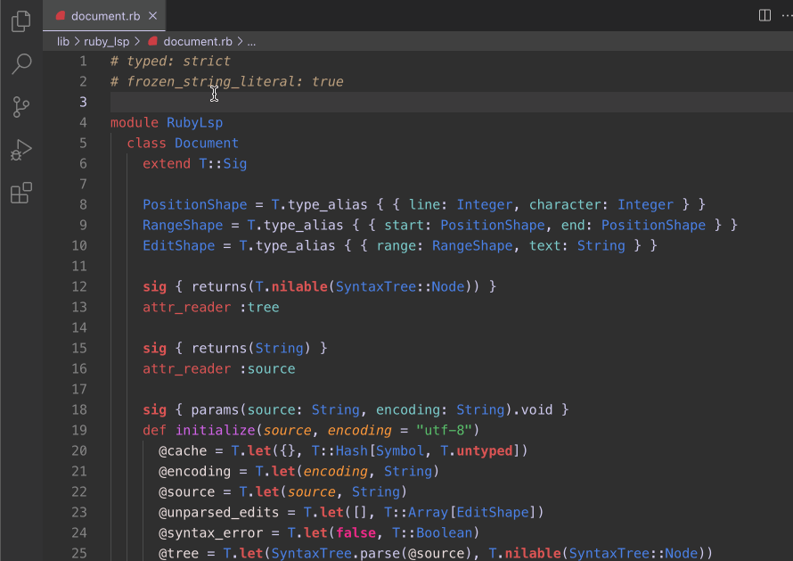

Ruby LSP¶ ↑
The Ruby LSP is an implementation of the language server protocol for Ruby, used to improve rich features in editors. It is a part of a wider goal to provide a state-of-the-art experience to Ruby developers using modern standards for cross-editor features, documentation and debugging.
Want to discuss Ruby developer experience? Consider joining the public Ruby DX Slack workspace.
Features¶ ↑

The Ruby LSP features include
-
Semantic highlighting
-
Symbol search and code outline
-
RuboCoperrors and warnings (diagnostics) -
Format on save (with
RuboCopor Syntax Tree) -
Format on type
-
Debugging support
-
Running and debugging tests through VS Code’s UI
-
Go to definition for classes, modules, constants and required files
-
Showing documentation on hover for classes, modules and constants
-
Completion for classes, modules, constants and require paths
-
Fuzzy search classes, modules and constants anywhere in the project and its dependencies (workspace symbol)
As of July 2024, Ruby LSP has received significant enhancements to its code navigation features. For an in-depth look at these improvements, including video demonstrations, check out this article. Despite these advancements, we plan to continue enhancing its code navigation support even further. You can follow our progress on this GitHub issue.
See complete information about features here.
If you experience issues, please see the troubleshooting guide.
Usage¶ ↑
With VS Code¶ ↑
If using VS Code, all you have to do is install the Ruby LSP extension to get the extra features in the editor. Do not install the ruby-lsp gem manually.
For more information on using and configuring the extension, see vscode/README.md.
With other editors¶ ↑
See editors for community instructions on setting up the Ruby LSP, which current includes Emacs, Neovim, Sublime Text, and Zed.
The gem can be installed by doing
gem install ruby-lsp
and the language server can be launched running ruby-lsp (without bundle exec in order to properly hook into your project’s dependencies).
Documentation¶ ↑
See the documentation for more in-depth details about the supported features.
For creating rich themes for Ruby using the semantic highlighting information, see the semantic highlighting documentation.
Configuring code indexing¶ ↑
By default, the Ruby LSP indexes all Ruby files defined in the current project and all of its dependencies, including default gems, except for
-
Gems that only appear under the
:developmentgroup -
All Ruby files under
test/*/.rb
This behaviour can be overridden and tuned. Learn how to configure it for VS Code or for other editors.
Note that indexing-dependent behavior, such as definition, hover, completion or workspace symbol will be impacted by the configuration changes.
The older approach of using a .index.yml file has been deprecated and will be removed in a future release.
# Exclude files based on a given pattern. Often used to exclude test files or fixtures excluded_patterns: - "**/spec/**/*.rb" # Include files based on a given pattern. Can be used to index Ruby files that use different extensions included_patterns: - "**/bin/*" # Exclude gems by name. If a gem is never referenced in the project's code and is only used as a tool, excluding it will # speed up indexing and reduce the amount of results in features like definition or completion excluded_gems: - rubocop - pathname # Include gems by name. Normally used to include development gems that are excluded by default included_gems: - prism
Addons¶ ↑
The Ruby LSP provides an addon system that allows other gems to enhance the base functionality with more editor features. This is the mechanism that powers addons like
Additionally, some tools may include a Ruby LSP addon directly, like
Other community driven addons can be found in rubygems by searching for the ruby-lsp prefix.
For instructions on how to create addons, see the addons documentation.
Learn More¶ ↑
-
RubyConf 2022: Improving the development experience with language servers (Vinicius Stock)
-
RubyKaigi 2023: Code indexing - How language servers understand our code (Vinicius Stock)
Contributing¶ ↑
Bug reports and pull requests are welcome on GitHub at github.com/Shopify/ruby-lsp. This project is intended to be a safe, welcoming space for collaboration, and contributors are expected to adhere to the Contributor Covenant code of conduct.
If you wish to contribute, see CONTRIBUTING for development instructions and check out our pinned roadmap issue for a list of tasks to get started.
License¶ ↑
The gem is available as open source under the terms of the MIT License.